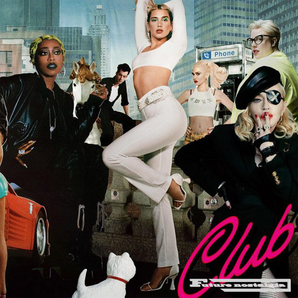
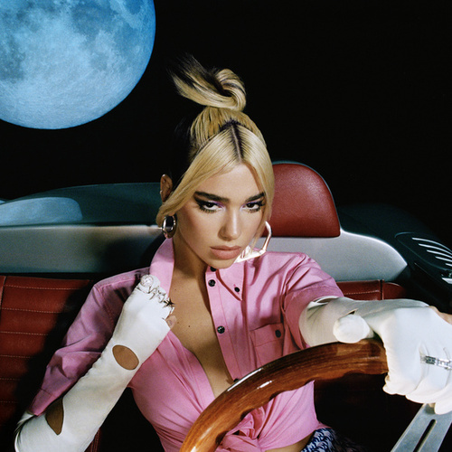
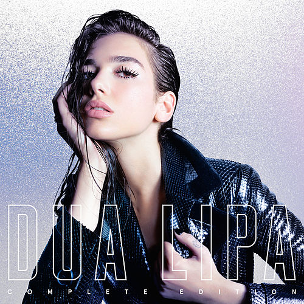

Dua lipa
Dua Lipa is an English singer, songwriter, and model. Her musical career began at age 14, when she began covering songs by other artists on YouTube. In 2015, she was signed with Warner Music Group and released her first single soon after.
In August 2015, she released her first single "New Love", produced by Emile Haynie and Andrew Wyatt. She released her second single "Be the One", in October 2015. "Be the One" achieved success across Europe, reaching number one in Belgium, Poland and Slovakia, as well as charting within the top 10 in over 11 European territories. In Australia and New Zealand, the song became an airplay success, reaching numbers 6 and 20 respectively. Lipa describes her musical style as "dark pop".
In January 2018, Lipa received nominations in five categories at the 2018 Brit Awards, more nominations than any other artist that year. She was nominated for British Female Solo Artist, British Breakthrough Act, MasterCard British Album of the Year (Dua Lipa), British Single of The Year ("New Rules") and British Video of The Year ("New Rules"). This was the first time that a female artist had received five nominations.[36] She performed at the awards ceremony held on 21 February at the O2 Arena in London and collected the awards for British Female Solo Artist and British Breakthrough Act.
| DISCOGRAFÍA | FECHA DE PUBLICACIÓN | CANCIONES |
|---|---|---|
|  | Octubre del 2020 |
|
|  | Marzo del 2019 |
|
|  | Junio del 2017 |
|